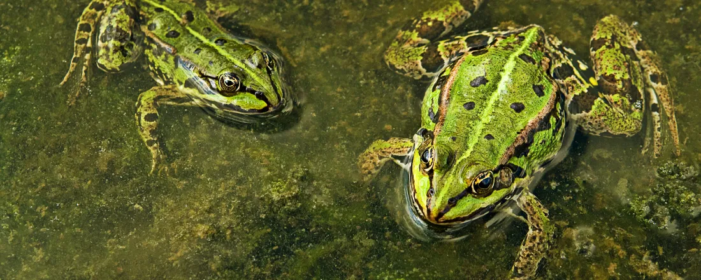

Educação Ambiental
Educação Ambiental
Ensino Ativo nas Escolas
Intervenção com 80 alunos de três colégios aplicando o ciclo de ação-reflexão-ação para o ensino sobre fauna silvestre e exótica.
Baixar Relato (PDF) 📥
A LACASE integra pesquisa e extensão na UFJ para promover a conscientização ambiental, estudando desde a fisiologia térmica de répteis até os bioindicadores do Cerrado.
Resultados das nossas ações de ensino, pesquisa e extensão.
Palestra ministrada pelo CEO da The Wild Place e membro do Amphibian Specialist Group (ASG/IUCN). Evento totalmente online e gratuito.

Educação Ambiental
Intervenção com 80 alunos de três colégios aplicando o ciclo de ação-reflexão-ação para o ensino sobre fauna silvestre e exótica.
Baixar Relato (PDF) 📥 Conservação
Conservação
Artigo de revisão abordando o declínio populacional de polinizadores e seu impacto direto no equilíbrio dos ecossistemas.
Baixar Artigo (PDF) 📥